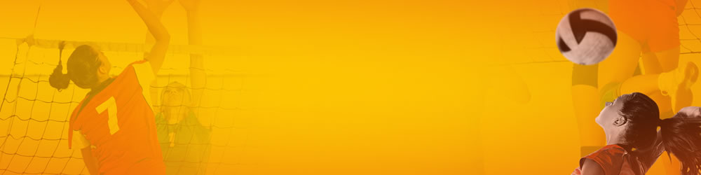

HOME FUTEBOL VOLEI BEISEBOL CONTATO
VOLEI
MELHORANDO SUAS HABILIDADES
1 - Aprenda a sacar por cima
Apesar de muitos jogadores terem aperfeiçoado o saque com pulo, simples por cima pode ser bem eficaz.
2 - Aprenda a passar e dar manchetes com precisão
Uma das principais coisas que precisa aprender depois que seu saque é devolvido, é como passar a bola de forma eficaz para um jogador na posição de configuração, e dar a sua equipe a chance de marcar um ponto.
3 - Saiba como levantar de forma eficaz
A intenção de um bom levantamento é dar a outros jogadores a oportunidade de marcar para a equipe. Um levantamento é a melhor maneira de contribuir para o fluxo do jogo e dar a sua equipe a chance de marcar um ponto.
4 - Aprenda a cortar com força
Esse é o movimento ideal para o terceiro toque na bola. Se executado corretamente, ele deve terminar com um ponto para sua equipe. Embora seja melhor praticado com uma rede, os jogadores podem treinar uns com os outros para aperfeiçoar o movimento do plano.
Web Esportes - Todos os direitos reservados